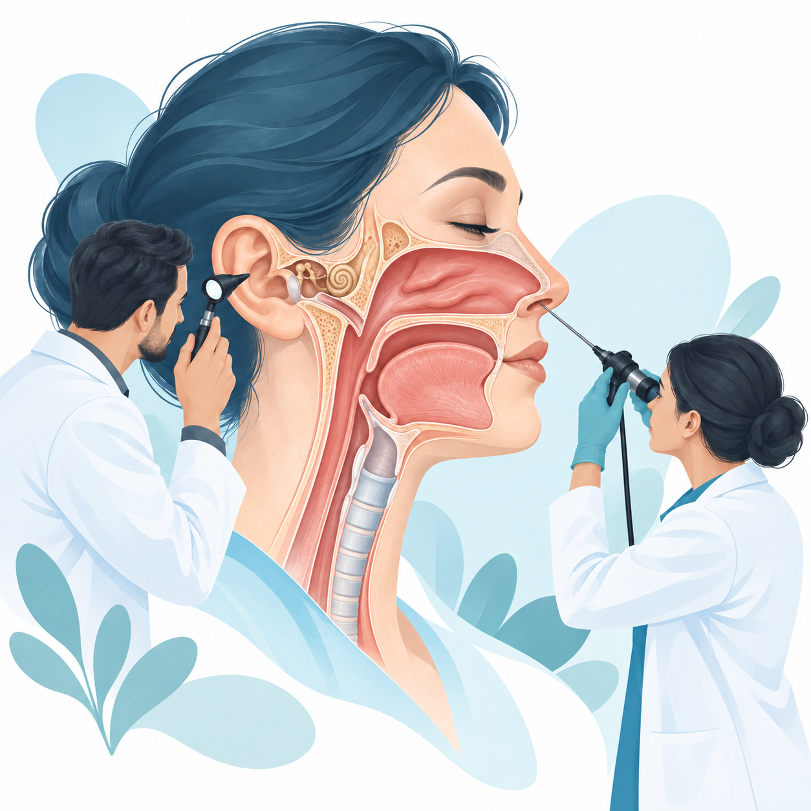

Forhåndsvisning · Ahus og nasjonalt faginnhold. Innlogging er ikke aktivert.
FAG, LÆRING OG KLINISK HVERDAG
Alt du trenger i ØNH – samlet på ett sted.
En fagportal for LIS og overleger i øre-nese-hals, med lokale ressurser for hele avdelingen.
Her finner du fagområder, prosedyrer, læring og veiledning, sammen med praktisk informasjon og opplæring tilpasset leger, sykepleiere og kontortjenesten ved ditt sykehus.

Laster innhold …
KUNNSKAP SOM VOKSER MED DEG
Bygget for klinisk hverdag
Plattformen utvikles fortløpende med nye fagområder, prosedyrer og læringsressurser.
Finn det du trenger ↑